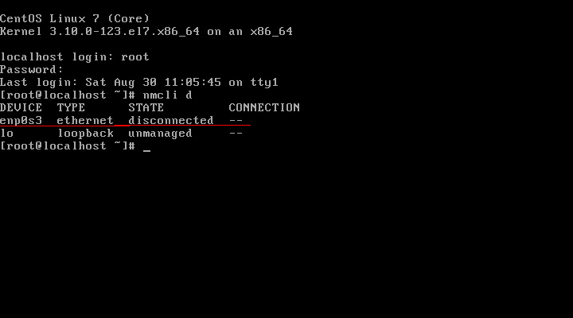
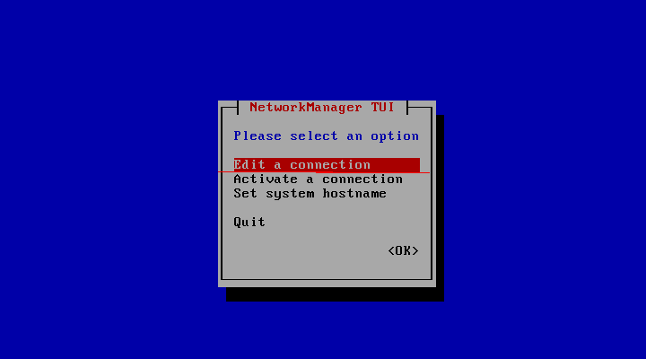
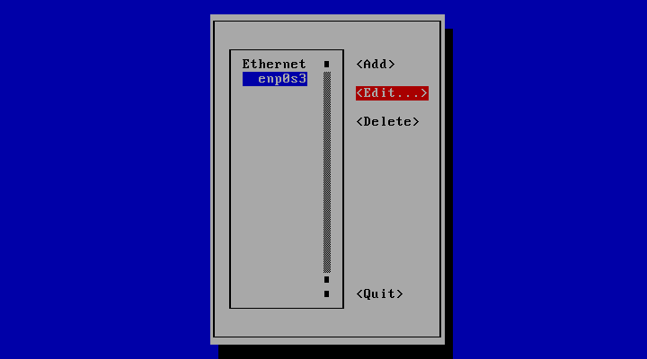
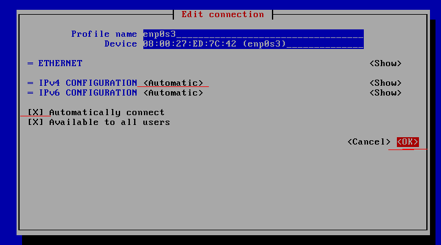
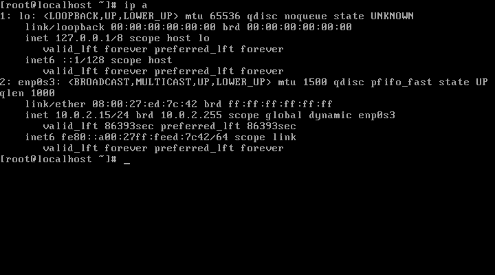

CENTOS :
VBox
For Vbox if you encounter errors, check vbox logs at
/var/log/vboxadd-install.log
Your system does not seem to be set up to build kernel modules.
yum clean all
yum install gcc-c++
yum install kernel-devel
yum install kernel-headers
How to setup network after RHEL/CentOS 7 minimal installation
After installing RHEL/CentOS 7 minimal, You may not able to connect network in that machine. This will happen because Ethernet interfaces are not enabled by default.
nmcli d (List the available interfaces)
nmtui
1. open Network manager, and choose Edit connection
2. choose you network interfaces and click “Edit”
3. Choose “Automatic” in IPv4 CONFIGURATION and check Automatically connect check box and press OK and quit from Network manager.
4. Restart network service
# service network restart




